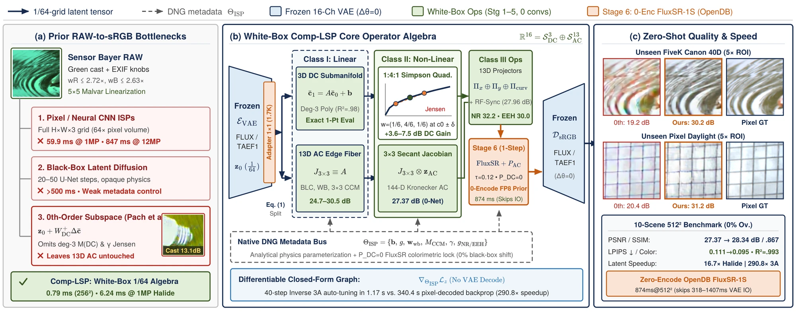
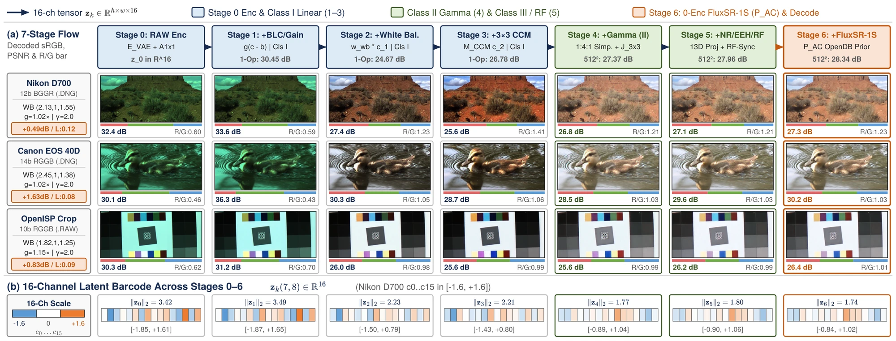
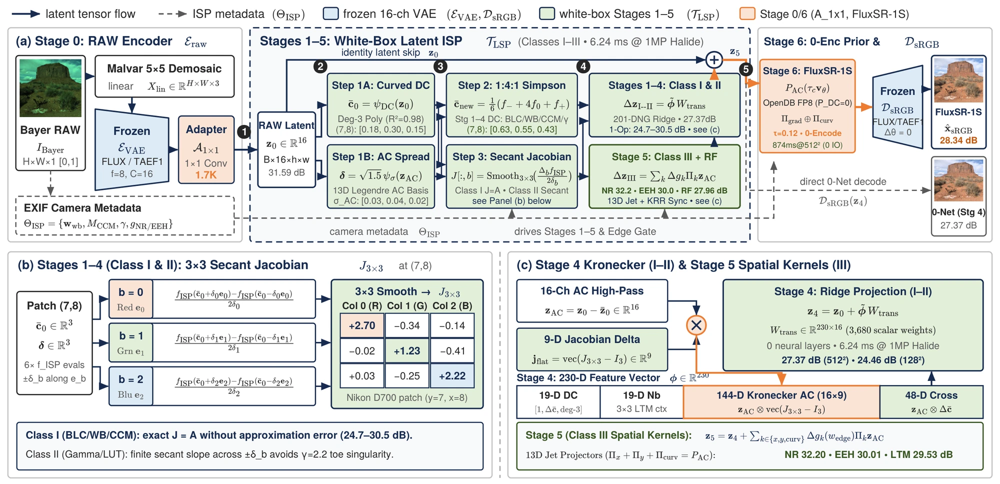
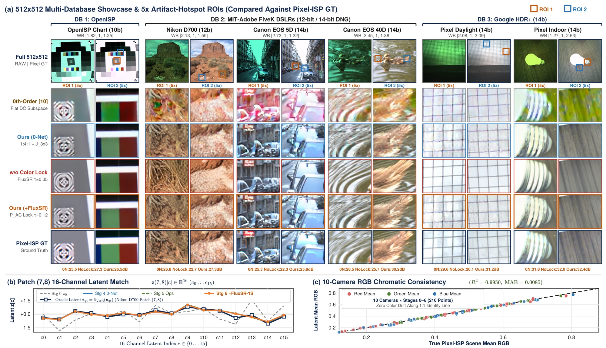
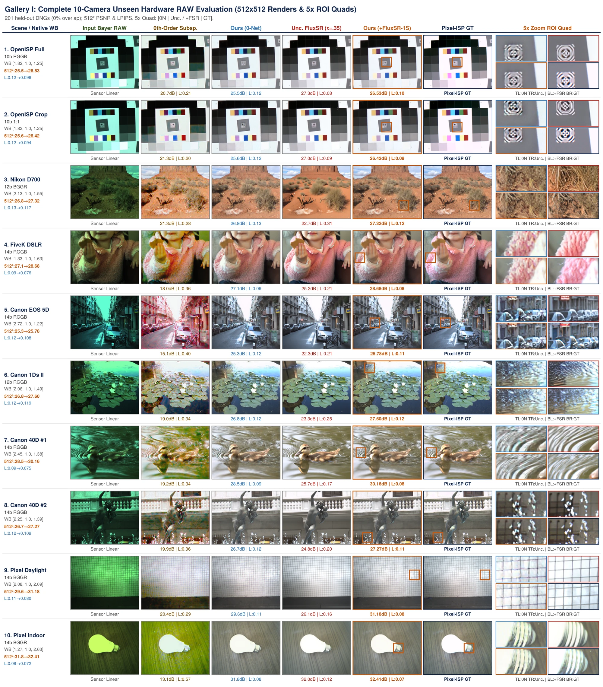
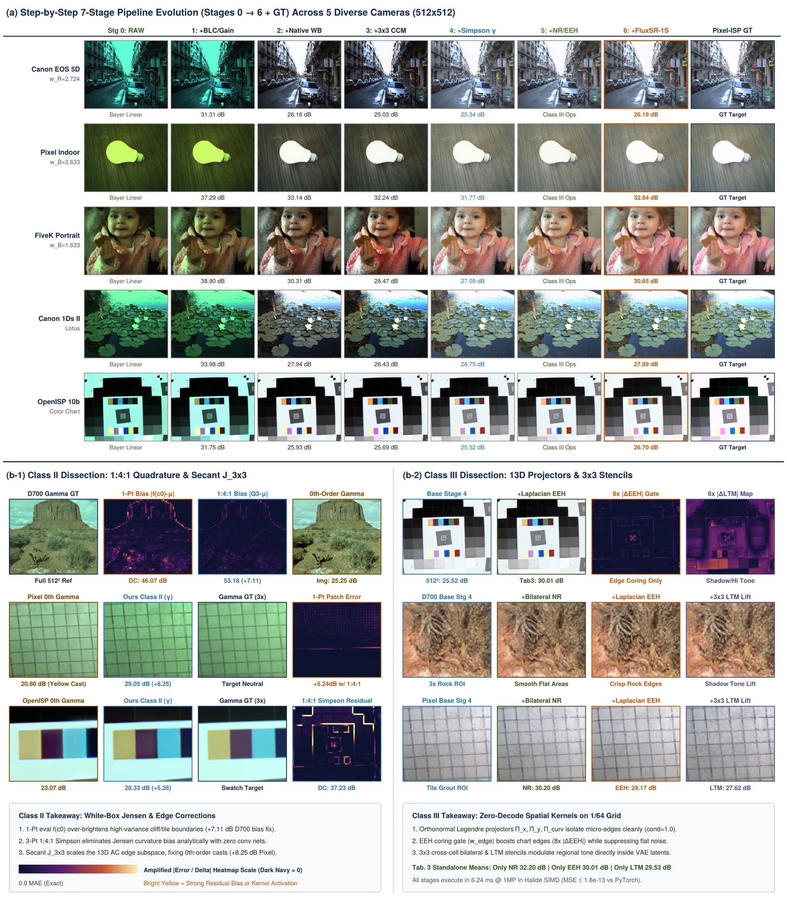

{yongjoon.song, hansol.lee, jeisung.lee, yeolmin.seong}@samsung.com • IEEE/CVF CVPR 2027
Modern generative models standardize on $8\times$-downsampled 16-channel VAEs (e.g., FLUX.1, TAEF1), packing each $8\times 8\times 3$ patch into $\mathbb{R}^{16} = \mathcal{S}_{\text{DC}}^3 \oplus \mathcal{S}_{\text{AC}}^{13}$. On sensor Bayer RAWs, 0th-order sRGB subspace steering ($\mathbf{z} + W_{\text{DC}}^+\Delta\mathbf{c}$) [15] fails due to curved chromatic manifolds, concave gamma Jensen bias, and untransformed 13D AC edges, whereas diffusion ISPs take $>500\text{ ms}$ and neural pixel ISPs run at full $H\times W$. We present White-Box Computational Latent Signal Processing (Comp-LSP), executing camera ISPs directly on $\frac{H}{8}\times\frac{W}{8}\times 16$ latents with a frozen decoder ($\Delta\theta_{\text{dec}} = 0$): (I) Pointwise Linear (BLC, Gain, WB, $3\times 3$ CCM) via exact 1-point evaluation; (II) Pointwise Non-Linear (Gamma, LUTs) via 3-Point Simpson (1:4:1) Quadrature ($+3.6\text{--}7.5\text{ dB}$ DC gain) and $3\times 3$ Secant Jacobians with $144\text{-D}$ Kronecker AC transport; and (III) Spatial Kernels (EEH, NR, LTM) via 13D Legendre projectors and closed-form receptive-field synchronization (RF-Sync, $27.96\text{ dB}$), feeding a Zero-Encode OpenDB 1-Step Flow Prior (FluxSR-1S, $\tau_c=0.12$) applied strictly within the 13D AC subspace $\Pi_{\text{grad}}^6\oplus\Pi_{\text{curv}}^7$ (skipping $318\text{--}1,407\text{ ms}$ VAE IO). Across 10 unseen scenes ($201$-DNG $0\%$-overlap), Comp-LSP preserves $R^2 = 0.9950$ ($0.9931$ at $512^2$) colorimetry, lifts $512^2$ unseen PSNR from $18.80$ (0th-order) and $27.37$ (0-Net) to $28.34\text{ dB}$ ($10/10$ wins), cuts LPIPS from $0.3361$ (0th-order) and $0.1106$ (0-Net) to $0.0947$ ($-14.4\%$ vs. 0-Net, $-7.0\%$ vs. scratch 4S ablation), runs Stages 1–4 in $6.24\text{ ms}$ at 1MP in Halide ($16.7\times$ @ 12MP), and speeds up inverse 3A tuning by $290.8\times$.
Recent frontier generative vision models standardize on 16-channel Variational Autoencoders (VAEs) with $8\times$ spatial downsampling ($f=8, C=16$, e.g., FLUX.1 [2] and TAEF1 [3]), compressing each $8\times 8\times 3$ pixel patch ($192$ scalar values) into a 16-dimensional latent vector $\mathbf{z} \in \mathbb{R}^{16}$. Despite the apparent entanglement of this high-dimensional representation, Pach et al. (The Latent Color Subspace) [15] recently discovered an emergent geometric order inside FLUX.1: spatially uniform color patches project onto a low-dimensional 3D chromatic subspace $\mathcal{S}_{\text{DC}}^3 \subset \mathbb{R}^{16}$ that is linearly separable from the complementary 13D intra-patch spatial structure fiber $\mathcal{S}_{\text{AC}}^{13}$ ($\mathbb{R}^{16} = \mathcal{S}_{\text{DC}}^3 \oplus \mathcal{S}_{\text{AC}}^{13}$), while Santamaria et al. [17] characterized a shared luminance and opponent-color subspace via linear encoder approximation. In this paper, we ask whether this emergent latent subspace structure can be elevated from flat sRGB palette steering during text-to-image synthesis to a universal, white-box camera Image Signal Processor (ISP)—analogous to how Gharbi et al. (HDRNet) [9] unified pixel-domain operators via bilateral-grid affine slicing: Can a single closed-form mathematical operator algebra execute arbitrary camera ISP functions—linear colorimetry, non-linear tone curves, and spatial neighborhood kernels—directly on genuine hardware sensor Bayer RAWs inside the $1/64$-resolution FLUX.1 latent space ($\frac{H}{8} \times \frac{W}{8} \times 16$) without decoding to pixels?
Executing physical camera ISP stages on genuine sensor Bayer RAWs [4, 5] inside this compressed latent space exposes three fundamental limitations of existing 0th-order sRGB color-subspace shifts ($\mathbf{z}' = \mathbf{z}_0 + W_{\text{DC}}^+\Delta\bar{\mathbf{c}}$) [15] that mirror our three operator families:
SiLU and GroupNorm layers bend uniform RGB colors across wide RAW-to-sRGB dynamic ranges into a curved degree-3 polynomial manifold ($R^2 = 0.9797$ degree-3 vs. $0.9100$ flat linear on FLUX.1, Fig. 1b). Simultaneously, concave gamma ($x^{1/\gamma}$) couples intra-patch AC variance $\boldsymbol{\sigma}_{\text{AC}}^2$ into the $8\times 8$ patch DC color via Jensen’s inequality ($\mathbb{E}[x^{1/\gamma}] < (\mathbb{E}[x])^{1/\gamma}$).To resolve these challenges without re-training the foundation decoder ($\Delta\theta_{\text{dec}}=0$), we make three contributions:
Stage 5 (Sec. 4, Algorithm 1, Fig. 3): We derive a zero-network white-box operator (Stages 1–4: 0-Net, $0.79\text{ ms}$ at $256^2$ / $6.24\text{ ms}$ at 1MP in Halide [16], $\text{MSE} \le 1.78\times 10^{-13}$) that integrates concave tone curves via 1:4:1 Simpson quadrature ($+3.60\text{--}7.47\text{ dB}$ patch DC gain, Eq. 3), transports 13D spatial edges via a $3\times 3$ Secant Jacobian matrix $J_{3\times 3}$ (Eq. 4) lifted through $\mathbf{z}_{\text{AC}} \otimes \operatorname{vec}(J_{3\times 3} - I_3)$, and applies 13D orthonormal projectors plus closed-form Ridge RFF [20] receptive-field synchronization ($27.96\text{ dB}$ at $512^2$, $3.15\text{ ms}$ GPU).FluxSR-1S (Sec. 5, Tables 3–4, Figs. 2&4): Feeding $\mathbf{z}_5$ directly into open-weight 1-step FluxSR-1S [13] at native-grid flow time $\tau_c=0.12$ projected onto $\Pi_{\text{grad}}^6 \oplus \Pi_{\text{curv}}^7$ (skipping $318\text{--}1,407\text{ ms}$ VAE IO) outperforms both closed-form 0-Net ($+0.97\text{ dB}$, $-14.4\%$ LPIPS) and scratch iterative DDIM bridge ablations ($-7.0\%$ LPIPS), winning 10/10 unseen scenes at $512^2$ ($28.34\text{ dB}$, $0.0947$ LPIPS, $R^2 = 0.9950$).As summarized in Table 1, our framework bridges three previously disconnected research trajectories:
VAE Latent Color Subspaces for sRGB Steering. Understanding how high-dimensional autoencoders represent color is critical for training-free latent manipulation. Pach et al. [15] discovered that uniform sRGB patches in 16-channel VAEs (FLUX.1 [2], SD 3.5 [8]) project onto a 3D linear subspace $\mathcal{S}_{\text{DC}} \subset \mathbb{R}^{16}$, enabling sRGB palette steering during text-to-image generation. Concurrently, Santamaria et al. [17] characterized a shared luminance and opponent-color subspace via linear encoder approximation, enabling training-free closed-form sRGB color steering. While our work shares the foundational subspace decomposition $\mathbb{R}^{16} = \mathcal{S}_{\text{DC}}^3 \oplus \mathcal{S}_{\text{AC}}^{13}$ of Pach et al. [15], our formulation differs by generalizing from 0th-order flat sRGB DC shifts ($\mathbf{z}' = \mathbf{z} + W_{\text{DC}}^+\Delta\mathbf{c}$) to a 1st-order curved-manifold RAW Jet operator that integrates concave tone curves across $8\times 8$ patches via 3-point Simpson quadrature and transforms the 13D AC spatial edge fiber via a $3\times 3$ Secant Jacobian $J_{3\times 3}$.
Generative Latent Diffusion ISPs & Open-Weight Flow Priors. Recent latent diffusion imaging models such as LDM-ISP [19] (for low-light neural ISP) and RawGen [11] (for diffusion-based camera RAW generation) run multi-step U-Net diffusion inside VAE latent space ($>500\text{ ms}$) without closed-form camera physics, while open-weight flow priors like FluxSR [13] enable 1-step restoration in FLUX.1 latents. However, FluxSR assumes $4\times$-upsampled blurry images at $\tau_c=0.35$; feeding RAW latents directly into default FluxSR causes severe color drift and smoothing (Table 4), while pixel wrapping incurs $318\text{--}1,407\text{ ms}$ VAE IO. We resolve both via white-box DNG operators ($2.15\text{ ms}$@$512^2$, $6.24\text{ ms}$@1MP) followed by Zero-Encode AC-subspace FluxSR-1S at native-grid $\tau_c=0.12$.
Universal Pixel-Domain Grids and Controllable Neural ISPs. In pixel-domain imaging, Gharbi et al. (HDRNet) [9] unified tone and color operators through bilateral-grid affine slicing, while controllable neural ISPs including ParamISP [12], CtrlISP [21], and NILUT [6] condition CNNs or implicit 3D LUTs on camera parameters. Complementarily, RAW-Adapter [7] and ReRAW [1] adapt vision backbones to sensor RAW inputs. Unlike these approaches that require full-resolution $H\times W$ pixel-grid execution, Comp-LSP establishes a $1/64$-grid 16-channel latent operator algebra that reduces spatial grid volume by $64\times$.
| Method / Venue | Execution Grid | Linear RAW WB & $3\times 3$ CCM | Non-Linear DC Quadrature | AC Edge Jacobian Transport | Spatial / Kernel Operators | 1MP Latency ↓ |
|---|---|---|---|---|---|---|
| HDRNet (SIGGRAPH’17) [9] | Pixel ($H \times W$ Slice) | Yes (3D Bilateral Grid) | N/A ($1\times 1$ px Slice) | N/A ($1\times 1$ px Slice) | Bilateral Grid Slicing | $\sim 6\text{--}12\text{ ms}$ |
| ParamISP (CVPR’24) [12] / CtrlISP (CVPR-F’26) [21] | Pixel ($H \times W$, $1\times$) | Yes (Black-Box CNN) | N/A ($1\times 1$ px) | N/A ($1\times 1$ px) | Full-Res CNN | $>30\text{--}50\text{ ms}$ |
| NILUT (AAAI’24) [6] / RAW-Adapter (ECCV’24) [7] | Pixel ($H \times W$, $1\times$) | Yes (Implicit MLP) | N/A ($1\times 1$ px) | N/A ($1\times 1$ px) | Pointwise / Conv | $>15\text{--}25\text{ ms}$ |
| LDM-ISP (ICRA’25) [19] / RawGen (ECCV’26) [11] | VAE Latent ($1/64\times$) | No (Black-Box Diff. / RAW Gen.) | No | No | 20–50 Step Diffusion | $>500\text{ ms}$ |
| FluxSR (ICML’25) [13] w/ VAE IO | Pixel→Latent (OpenDB) | No (Color Shift / Drift) | No | No | 1-Step Flow DiT | $1,192\text{ ms}$ ($512^2$) / $4.02\text{ s}$ (1MP) |
| Latent Color Subspace (ICML’26) [15] | 16-Ch Latent ($1/64\times$) | No (sRGB T2I Only) | No (Point Eval) | No (AC Untouched) | No (0-Step Flat Shift) | $<1\text{ ms}$ ($256^2$) |
| VAE Color Alignment (arXiv’26) [17] | 16-Ch Latent ($1/64\times$) | No (sRGB Opponent) | No (Point Eval) | No (AC Untouched) | No (Closed-Form sRGB) | $<1\text{ ms}$ ($256^2$) |
| Comp-LSP (Ours, Stages 1–4: 0-Net Math) | 16-Ch FLUX / TAEF1 ($1/64\times$) | Yes (White-Box Exact) | Yes (1:4:1 Simpson) |
Yes ($J_{3\times 3} \otimes \mathbf{z}_{\text{AC}}$) | $3\times 3$ Secant + Neighborhood | 2.15 ms ($512^2$) / 6.24 ms (1MP) |
| Comp-LSP + Stage 5 RF-Sync (0-NN) | 16-Ch FLUX / TAEF1 ($1/64\times$) | Yes (27.96 dB / 0.108 LPIPS) | Yes (1:4:1 Simpson) |
Yes (144-D Kronecker) | Yes ($\Pi_{x,y,\text{curv}}$ + Closed-Form RFF) | 3.15 ms GPU ($512^2$, 0 Neural) |
| Comp-LSP + FluxSR-1S (Stage 6) | 16-Ch FLUX / TAEF1 ($1/64\times$) | Yes (28.34 dB / 0.095 LPIPS) | Yes ($\Pi_{\text{grad}}^6 \oplus \Pi_{\text{curv}}^7, \tau_c=0.12$) | Yes ($\Pi_{\text{grad}}^6\oplus\Pi_{\text{curv}}^7$) | Yes (Zero-Enc OpenDB FP8 DiT) | 873.6 ms ($512^2$, 0 ms VAE IO) |
Following the subspace decomposition of Pach et al. [15], a 16-channel VAE encoder $\mathcal{E}_{\text{VAE}}$ compresses each $8\times 8\times 3$ pixel patch ($192$ scalar values) into a latent vector $\mathbf{z}_0 \in \mathbb{R}^{16}$. Uniform color patches span a 3D mean-color subspace $\mathcal{S}_{\text{DC}}^3$ parameterized by a linear readout matrix $W_{\text{DC}} \in \mathbb{R}^{3\times 16}$ and its right pseudoinverse $W_{\text{DC}}^+ \in \mathbb{R}^{16\times 3}$ satisfying $W_{\text{DC}} W_{\text{DC}}^+ = I_3$. Defining biorthogonal oblique projectors $P_{\text{DC}}$ and $P_{\text{AC}}$ splits $\mathbf{z}_0$ into two complementary components:
Flat linear DC steering ($\mathbf{z}_{\text{new}} = \mathbf{z}_0 + W_{\text{DC}}^+ \Delta\bar{\mathbf{c}}$) [15, 17] fails on physical camera RAW ISPs (Fig. 2) for two fundamental mathematical reasons:
SiLU and GroupNorm activations bend the 3D color locus across luminance $Y \in [0, 1]$ into a curved degree-3 polynomial manifold $\boldsymbol{\mu}_{\text{DC}}(\bar{\mathbf{c}}) \in \mathbb{R}^{16}$ ($R^2 = 0.9797$ degree-3 vs. $0.9100$ flat linear, Fig. 1b). Moreover, under concave Gamma ($x^{1/\gamma}$), the patch mean of transformed pixels is strictly smaller than the transform of the patch mean: $\overline{f_{\text{ISP}}(\mathbf{x})} < f_{\text{ISP}}(\bar{\mathbf{c}}_0)$.To generalize beyond a fixed sequence of camera blocks, we formalize any image processing operator $\mathcal{O}: \mathbf{x} \mapsto \mathbf{y}$ acting on the 16-channel latent space ($\mathbf{z}_0 \in \mathbb{R}^{(H/8)\times(W/8)\times 16} = \mathcal{S}_{\text{DC}}^3 \oplus \mathcal{S}_{\text{AC}}^{13}$) into three canonical function families (Table 2):
1:4:1) Quadrature with boundary-damped excursion $\boldsymbol{\delta} = \operatorname{clip}(\sqrt{1.5}\,\boldsymbol{\sigma}_{\text{AC}},\, 0.015,\, 0.35)$ for DC color and a state-dependent $3\times 3$ Secant Chord Jacobian $J_{3\times 3}(\bar{\mathbf{c}}_0, \boldsymbol{\delta})$ for 13D AC contrast stretching.RF-Sync) Ridge regression before Stage 6 flow refinement.| Function Family | Representative ISP Ops | 3D DC Subspace ($\bar{\mathbf{c}}_{\text{new}} \in \mathbb{R}^3$) | 13D AC Edge Subspace ($\mathbf{z}_{\text{AC}} \in \mathcal{S}_{\text{AC}}^{13} \subset \mathbb{R}^{16}$) | $3\times 3$ Cross-Patch Stencil ($\mathcal{N}_{3\times 3}$) |
|---|---|---|---|---|
I. Pointwise LinearF_lin(x) = A x + b |
BLC, Gain, White Balance, $3\times 3$ CCM, Color Space | 1-Point Exact Evaluation ($\mathcal{F}''=0$): $\bar{\mathbf{c}}_{\text{new}} = A\bar{\mathbf{c}}_0 + \mathbf{b}$ |
Constant Analytical Jacobian: $J_{3\times 3} \equiv A,\;\; \mathbf{z}_{\text{AC}} \otimes \operatorname{vec}(A - I_3)$ |
Pointwise ($1\times 1$) on $\frac{H}{8}\times\frac{W}{8}$; degree-3 curve $\Delta\operatorname{poly}_3(\bar{\mathbf{c}})$ |
II. Pointwise Non-LinearF_nonlin(x) = φ(x) |
Gamma ($x^{1/\gamma}$), S-Curve, Soft-Clip, Log/HDR, LUTs | 3-Pt Simpson (1:4:1) Quadrature:$\tfrac{1}{6}\phi(\bar{\mathbf{c}}_0-\boldsymbol{\delta}) + \tfrac{4}{6}\phi(\bar{\mathbf{c}}_0) + \tfrac{1}{6}\phi(\bar{\mathbf{c}}_0+\boldsymbol{\delta})$ |
State-Dependent Secant Jacobian: $J[:,b] = \frac{\phi(\bar{\mathbf{c}}_0+\delta_b\mathbf{e}_b)-\phi(\bar{\mathbf{c}}_0-\delta_b\mathbf{e}_b)}{2\delta_b}$ |
$3\times 3$ Secant smoothing $\operatorname{Smooth}_{3\times 3}(J)$ + $\mathbf{z}_0 \otimes \Delta\bar{\mathbf{c}}$ state cross-terms |
| III-A. Intra-Patch Kernel ($r < 8\text{ px}$ Sub-Patch) |
Micro-Sharpening (EEH/USM), Sub-Patch High/Low-Pass | Mean-Preserving ($\sum K = 1$): $\bar{\mathbf{c}}_{\text{new}} = \bar{\mathbf{c}}_0$ ($\Delta\bar{\mathbf{c}} = \mathbf{0}$) |
13D Orthonormal Jet Projectors: $\Delta\mathbf{z}_{\text{AC}} = (\Delta g_x\Pi_x + \Delta g_y\Pi_y + \Delta g_{\text{curv}}\Pi_{\text{curv}})\mathbf{z}_{\text{AC}}$ |
Local within $1\times 1$ latent cell (acts on $\mathbf{z}_x, \mathbf{z}_y, \mathbf{z}_{\text{curv}}$ via coring $w_{\text{edge}}$) |
| III-B. Inter-Patch & Flow Prior ($r \ge 8\text{ px}$ / Generative Prior) |
Bilateral Denoise, Local Tone Map, $32\times 32$ RF Sync, OpenDB Refiner | Range-Weighted Neighbor Conv: + 3D DC Preservation |
Closed-Form RFF & AC-Subspace Flow: $(\eta_{\text{grad}}\Pi_{\text{grad}}^6 + \eta_{\text{curv}}\Pi_{\text{curv}}^7)(\tau_c\mathbf{v}_\theta)$ |
Stage 5 RF-Sync + Stage 6 FluxSR-1S:$D_4$-$3\times 3$ RFF Ridge + OpenDB FP8 DiT |

BLC, WB, CCM), Class II Non-Linear (1:4:1 Simpson quadrature + $3\times 3$ Secant Jacobian Kronecker AC transport), Class III Spatial Kernels ($\Pi_{x,y,\text{curv}}$ + $3\times 3$ LTM + RF-Sync), and Stage 6 Zero-Encode OpenDB FluxSR-1S [13] ($\tau_c=0.12$ inside $\Pi_{\text{grad}}^6\oplus\Pi_{\text{curv}}^7$, $874\text{ ms}$@$512^2$, skipping $318\text{--}1,407\text{ ms}$ VAE IO); (c) $5\times$ zoomed $512^2$ zero-shot ROIs and $27.37\to\mathbf{28.34\text{ dB}}$ / $0.0947$ LPIPS ($R^2{=}0.9931$; $0.9950$ at $128^2$) and $16.7\times$ 12MP / $290.8\times$ 3A speedups.

Stages 0–6) Across Three Unseen Sensors (Nikon D700, Canon EOS 40D, OpenISP test.RAW). (a) Classes I–III chain (0:RAW → 1:BLC → 2:WB → 3:CCM → 4:γ → 5:NR/EEH/RF → 6:FluxSR-1S) with decoded $512\times 512$ sRGB outputs, PSNR/LPIPS, and normalized R/G/B balance bars; (b) 16-ch latent barcode $\mathbf{z}_k(7,8)\in\mathbb{R}^{16}$ showing clean energy compression across stages.
Given a single-channel sensor Bayer RAW frame $\mathbf{I}_{\text{Bayer}} \in \mathbb{R}^{B\times 1\times H\times W}$ and its native DNG metadata $\Theta_{\text{ISP}} = (\mathbf{b}, g, \mathbf{w}_{\text{WB}}, \operatorname{CCM}_{3\times 3}, \gamma, \boldsymbol{\theta}_{\text{spat}})$, Stage 0 applies $5\times 5$ Malvar-He-Cutler linear demosaicing [14] followed by the frozen 16-channel VAE encoder $\mathcal{E}_{\text{VAE}}$ and a lightweight $1\times 1$ linear residual adapter $\mathcal{A}_{1\times 1}$ ($1.7\text{K}$ parameters, trained strictly on synthetic patches) to produce the initial RAW latent $\mathbf{z}_0 \in \mathbb{R}^{B\times 16\times (H/8)\times (W/8)}$. To guarantee strict zero-shot cross-dataset generalization and prevent spatial texture memorization, we partition our camera datasets into two strictly disjoint splits ($0\%$ scene or file overlap): (i) a 201-DNG Zero-Shot Calibration & Stage 5 Solver Set comprising $170$ held-out MIT-Adobe FiveK DSLR DNGs and $31$ held-out Google Pixel HDR+ [10] 14-bit mobile DNGs ($51,456$ non-overlapping $8\times 8$ patches, $205,824$ stage-patch pairs), and (ii) 9 distinct physical hardware captures across 6 sensor models yielding 10 unseen ROI test scenes evaluated in Section 5 (OpenISP 10-bit RGGB test.RAW full chart + 1:1 center detail crop with zero training scenes from the OpenISP domain, $6$ held-out FiveK DSLR scenes, and $2$ held-out Google Pixel 14-bit mobile DNGs). The linear readout matrices ($\Psi \in \mathbb{R}^{16\times 16}$, $W_{\text{z2c,nb}} \in \mathbb{R}^{185\times 3}$), anisotropic Tikhonov transition matrices ($W_{\text{trans,lin}}, W_{\text{trans,}\gamma} \in \mathbb{R}^{230\times 16}$), and closed-form Stage 5 RF-Sync ($2048$-D Orthogonal RFF [20] + $D_4$-$3\times 3$ Ridge, $\lambda=0.01$ validated on a disjoint $193\to 8$ held-out split) are solved once analytically and held 100% frozen across all $10$ unseen test scenes (scratch bridges $\mathcal{R}_{1\text{-step}}, \mathcal{R}_{4\text{-step}}$ are evaluated strictly as ablation baselines in Sec. 5.3). We support Mode A (On-Chip Sensor Stats) ($+3.6\text{--}7.5\text{ dB}$ DC gain) and Mode B (Latent-Only Readout) ($+1.1\text{--}2.3\text{ dB}$).
On each $8\times 8$ patch latent $\mathbf{z}_0 \in \mathbb{R}^{16}$ (illustrated on patch $(y=7, x=8)$ of Nikon D700 with authentic DNG metadata $b=0.01$, $g=1.02\times$, $\mathbf{w}_{\text{WB}}=[2.129, 1.0, 1.547]$, native $3\times 3$ CCM, and $\gamma=2.0$), our white-box latent operator $\mathcal{T}_{\text{LSP}}$ executes in four explicit equations (Algorithm 1, Fig. 3):
Step 1 — Subspace Readout of Patch Mean RGB $\bar{\mathbf{c}}_0$ & Intra-Patch AC Spread $\boldsymbol{\sigma}_{\text{AC}}$: Without decoding to pixels, our $3\times 3$ neighbor-aware polynomial readout $\psi_{\text{DC}}$ and orthonormal Legendre AC norm $\psi_\sigma$ extract the green-biased linear RAW mean color $\bar{\mathbf{c}}_0$, the intra-patch RGB standard deviation $\boldsymbol{\sigma}_{\text{AC}}$, and the boundary-damped quadrature excursion $\boldsymbol{\delta} = \operatorname{clip}(\sqrt{1.5}\,\boldsymbol{\sigma}_{\text{AC}},\, 0.015,\, 0.35)$:
Step 2 — 3-Point Simpson (1:4:1) Jet Quadrature for Non-Linear DC Color $\bar{\mathbf{c}}_{\text{new}}$: Here, $f_{\text{ISP}}: \mathbb{R}^3 \to \mathbb{R}^3$ is the exact closed-form pointwise camera ISP composite function (BLC/Gain $\to$ WB $\to$ $3\times 3$ CCM $\to$ Gamma):
Matching a symmetric 3-point weighted sum $w\,f(\bar{c}_0 - \delta) + w_0\,f(\bar{c}_0) + w\,f(\bar{c}_0 + \delta) = (2w+w_0)f(\bar{c}_0) + (w\delta^2)f''(\bar{c}_0) + \mathcal{O}(\delta^4)$ against the second-order Taylor-Jensen expansion $\mathbb{E}[f_{\text{ISP}}(X)] \approx f_{\text{ISP}}(\bar{c}_0) + \tfrac{1}{2}\sigma_{\text{AC}}^2 f''_{\text{ISP}}(\bar{c}_0)$ requires $w_0 + 2w = 1$ and $w\delta^2 = \tfrac{1}{2}\sigma_{\text{AC}}^2$. At Simpson’s $(w, w_0, w) = (\tfrac{1}{6}, \tfrac{4}{6}, \tfrac{1}{6})$, exact 2nd-order matching holds at $\kappa=\sqrt{3}$; to prevent dark-patch $[0,1]$ clipping where $\phi''(x)\to -\infty$ near $0^+$ and keep $J_{3\times 3}$ well-conditioned, we damp the excursion to $\kappa=\sqrt{1.5}$ (full derivation in Appendix A):
Step 3 — $3\times 3$ Secant Jacobian Matrix $J_{3\times 3}$ for 13D AC Edge Translation: Evaluating clipped perturbations $\mathbf{c}_b^\pm = \operatorname{clip}(\bar{\mathbf{c}}_0 \pm \delta_b\mathbf{e}_b, 0, 1)$ along each color axis $b \in \{R, G, B\}$ and smoothing across $3\times 3$ neighboring patches ($0.85\,J_{\text{center}} + 0.15\,J_{3\times 3\text{ avg}}$) constructs $J_{3\times 3}$:
In Fig. 3b, the diagonal entries ($J_{RR}=+2.697, J_{GG}=+1.226, J_{BB}=+2.219$) amplify weak raw red/blue edges by the compounded Gain $\times$ WB ($w_R=2.129, w_B=1.547$) $\times$ Gamma shadow slope, while the off-diagonal entries ($J_{RG}=-0.342, J_{GB}=-0.412$) perform cross-channel $3\times 3$ CCM edge decontamination.
Step 4 — Coupled 16-Ch Reconstruction (0-Net), Closed-Form Stage 5 RF-Sync & AC-Subspace Stage 6 Flow (FluxSR-1S): Let $\mathbf{dJ}_9 = \operatorname{vec}(J_{3\times 3} - I_3)$ and let $\tilde{\boldsymbol{\phi}} = \operatorname{tanh\text{-}bnd}([\Delta\operatorname{poly}_3^{\text{loc}}(\bar{\mathbf{c}})\,(19\text{D}) \;\|\; \Delta\operatorname{poly}_3^{\text{nb}}(\bar{\mathbf{c}})\,(19\text{D}) \;\|\; \mathbf{z}_{\text{AC}} \otimes \mathbf{dJ}_9\,(144\text{D}) \;\|\; \mathbf{z}_0 \otimes \Delta\bar{\mathbf{c}}\,(48\text{D})])$ (Alg. 1). Projecting through $W_{\text{trans}}(\alpha_{\text{nl}}) = (1-\alpha_{\text{nl}})W_{\text{trans,lin}} + \alpha_{\text{nl}}W_{\text{trans,}\gamma}$ ($\alpha_{\text{nl}} \in [0, 1]$ ramps smoothly from linear to tone-curve stages) yields $\mathbf{z}_4 = \mathbf{z}_0 + \tilde{\boldsymbol{\phi}}\,W_{\text{trans}}(\alpha_{\text{nl}})$ (Stage 4: 0-Net, $27.37\text{ dB}$@$512^2$, $2.15\text{ ms}$@$512^2$ / $6.24\text{ ms}$@1MP in Halide [16]), followed by Class III spatial projectors plus closed-form 2048-D Orthogonal RFF + $D_4$-$3\times 3$ Ridge RF synchronization $\mathbf{z}_5$ gated by $\gamma_{\text{dev}} = \tanh(10\|\boldsymbol{\theta}_{\text{dev}}\|_2)$ ($0$ neural layers, $0.0$ neutral identity, $3.15\text{ ms}$ GPU, $27.96\text{ dB}$@$512^2$). Stage 6 feeds $\mathbf{z}_5$ directly into FP8 FLUX.1-dev fused with rank-64 FluxSR [13] at native-grid flow time $\tau_c = 0.12$ ($120/1000$, avoiding $4\times$-SR smoothing at $\tau_c=0.35$; $0\text{ ms}$ VAE IO, skipping $82.2\text{--}1,407\text{ ms}$) projected strictly onto the 13D AC spatial subspace ($P_{\text{AC}} = \Pi_{\text{grad}}^6 \oplus \Pi_{\text{curv}}^7 \subset \mathcal{S}_{\text{AC}}^{13}$, $\Pi_{\text{grad}}^6 \equiv \Pi_x^3 \oplus \Pi_y^3$):
where $s_{\text{ISP}}(\Theta_{\text{ISP}}) \in [0, 1]$ vanishes at neutral metadata, $w_{\text{struct}}(\mathbf{z}_5) = \operatorname{clip}((\operatorname{RMS}_c(\mathbf{z}_5 - \operatorname{Avg}_3(\mathbf{z}_5)) - 0.01)/0.06,\, 0,\, 1)$ gates textures, the AC projection leaves the 3D DC colorimetry of Stages 1–5 invariant by $\mathcal{S}_{\text{DC}}^3 \perp \mathcal{S}_{\text{AC}}^{13}$ (Eq. 1), and $(\eta_{\text{grad}}, \eta_{\text{curv}})$ are calibrated cleanly on 8 held-out training DNGs ($0\%$ test overlap) as $(0.30, 0.50)$ (Balanced) or $(0.20, 0.55)$ (Realism), lifting $512^2$ unseen PSNR across 10/10 scenes from $27.37\text{ dB}$ (0-Net) to $28.34\text{ dB}$ ($0.0947$ LPIPS, $-14.4\%$ vs. 0-Net, Fig. 4a–c).
To illustrate how Class III Spatial Kernel Operators ($\mathcal{F}_{\text{kernel}}$) execute without decoding to pixel space, consider patch $(y=7, x=8)$ of OpenISP 10-bit Full Chart (chart RAW). QR orthonormalization of the Legendre Jet basis inside the 13D pure-AC subspace $P_{\text{AC}} = I_{16} - W_{\text{DC}}^+ W_{\text{DC}}$ constructs three mutually orthogonal directional projectors ($\Pi_x + \Pi_y + \Pi_{\text{curv}} = P_{\text{AC}}$, $\operatorname{cond}(\Pi_k) = 1.0$) for horizontal gradients ($\Pi_x$, rank 3), vertical gradients ($\Pi_y$, rank 3), and 2nd-order Laplacian curvature ($\Pi_{\text{curv}}$, rank 7):
EEH, $\kappa_{\text{eeh}}=0.45$), $(\Delta g_x, \Delta g_y, \Delta g_{\text{curv}}) = (+0.0309, +0.0309, +0.0442)$ selectively amplifies chart edges ($30.01\text{ dB}$ 10-scene mean PSNR, $33.04\text{ dB}$ on OpenISP). Conversely, for Bilateral Noise Reduction (NR, $\lambda_Y=0.35, \lambda_C=0.45$), the range factor $(1-0.5\,w_{\text{edge}}) = 0.5094$ halves high-frequency damping at this strong edge to $(\Delta g_x, \Delta g_y, \Delta g_{\text{curv}}) = (-0.0089, -0.0089, -0.0183)$ ($32.20\text{ dB}$ 10-scene mean PSNR).
FLUX.1 AutoencoderKL or TAEF1, $f=8, C=16$) + $1\times 1$ Adapter $\mathcal{A}_{1\times 1}$; Matrices $(\Psi,\, W_{\text{z2c,nb}},\, W_{\text{trans}},\, \Pi_{\text{grad}}^6,\, \Pi_{\text{curv}}^7,\, \Omega_{\text{RFF}})$; OpenDB $\mathcal{F}_\theta^{\text{FluxSR}}$ ($\tau_c=0.12$).1:4:1) Quadrature on $1/64$ Grid for Non-Linear DC Color $\bar{\mathbf{c}}_{\text{new}}$Stage 4: 0-Net, $\mathbf{z}_4$)FluxSR-1S ($\tau_c = 0.12$) & Frozen $\mathcal{D}_{\text{sRGB}}$ ($\Delta\theta_{\text{dec}}=0$)
Stages 0–6) & Algorithm 1 Execution Chain Inside the 16-Channel Latent Space ($h=H/8, w=W/8$, Sec. 4). (a) Complete architectural dataflow from Stage 0: RAW Encoder ($\mathcal{E}_{\text{raw}}$) through Stages 1–5: White-Box 16-Ch Latent ISP ($\mathcal{T}_{\text{LSP}}$, Eqs. 3, 4, 6) + closed-form RF-Sync ($3.15\text{ ms}$ GPU) and Stage 6 (Zero-Encode AC-subspace OpenDB FluxSR-1S at $\tau_c=0.12$ [$873.6\text{ ms}$@$512^2$, $28.34\text{ dB}$], Eq. 5) to the 100% frozen sRGB VAE Decoder ($\mathcal{D}_{\text{sRGB}}$); (b) Stages 1–4 (Classes I & II) column-by-column construction of $J_{3\times 3}$ at Nikon D700 patch $(7,8)$; (c) Stage 4 $144$-D Kronecker outer product $\mathbf{z}_{\text{AC}} \otimes \operatorname{vec}(J_{3\times 3} - I_3)$ and Stage 5 13D orthonormal Legendre projectors ($\Pi_x + \Pi_y + \Pi_{\text{curv}} = P_{\text{AC}}$; NR $32.20$, EEH $30.01$, LTM $29.53\text{ dB}$).
We evaluate Comp-LSP under a 100% Zero-Shot cross-dataset protocol: all linear subspace transition matrices ($W_{\text{trans,lin}}, W_{\text{trans,}\gamma}$), the deterministic closed-form Stage 5 RF-Sync ($2048$-D Orthogonal RFF + $D_4$-$3\times 3$ Ridge $W_{\text{RF}}$), and the legacy scratch ablation bridges ($\mathcal{R}_{1\text{-step}}^{\text{DDIM}}$ [$20.0\text{K}$], $\mathcal{R}_{4\text{-step}}^{\text{DDIM}}$ [$33.5\text{K}$], Table 4) are calibrated once on 201 held-out real camera DNGs ($170$ MIT-Adobe FiveK DSLR DNGs + $31$ Google Pixel HDR+ [10] 14-bit mobile DNGs = $51,456$ non-overlapping $8\times 8$ patches) and evaluated without any per-camera or per-image adaptation across 9 distinct physical hardware captures across 6 sensor models yielding 10 strictly unseen ROI test scenes ($0\%$ overlap) spanning three independent RAW databases: OpenISP 10-bit RGGB (test.RAW full chart and 1:1 center detail crop, representing a completely unseen camera domain with zero training scenes), MIT-Adobe FiveK [5] 12-bit/14-bit DSLRs ($6$ held-out scenes: Nikon D700 BGGR, FiveK DSLR RGGB, Canon EOS 5D, Canon 1Ds MkII, and two Canon EOS 40D captures), and Google Pixel 14-bit BGGR mobile DNGs ($2$ held-out captures: Daylight and Indoor tungsten).
Table 3, Fig. 4, and full-page supplementary galleries (Figs. S1–S2, Appendix D) report both standalone single-stage PSNR (↑) across Classes I–III and end-to-end combined performance on the native $512\times 512$ grid under each camera’s authentic DNG metadata (PSNR, SSIM [18], and LPIPS [22]). Individual 0-Net stages reach $30.45\text{ dB}$ (BLC/Gain), $24.67\text{ dB}$ (WB), $26.78\text{ dB}$ (CCM), $25.45\text{ dB}$ (Gamma), $30.01\text{ dB}$ (EEH), $32.20\text{ dB}$ (NR), and $29.53\text{ dB}$ (LTM). At the native $512^2$ grid, closed-form Stage 5 RF-Sync ($0$ neural layers, $0.0$ neutral identity) lifts mean PSNR from $27.37\text{ dB}$ (0-Net) to $27.96\text{ dB}$ (MAE $0.0148 \to 0.0091$, $R^2=0.993$), and Stage 6 Zero-Encode AC-subspace FluxSR-1S ($\tau_c = 0.12$) improves all 10 unseen scenes simultaneously over 0-Net ($10/10$ PSNR & LPIPS wins) to $28.34\text{ dB}$ ($0.8667$ SSIM), cutting perceptual LPIPS from $0.1106$ to $0.0947$ ($-14.4\%$ vs. 0-Net, $-12.6\%$ vs. Stg5 RF-Sync, $-7.0\%$ vs. scratch 4S ablation) at $0.0095$ MAE ($R^2=0.9931$; $0.9950$ at $128^2$).

Bayer RAW | Pixel GT frames alongside 4 rows of $5\times$ artifact-hotspot ROIs comparing 0th-Order [15], Ours 0-Net, Ours +FluxSR-1S [$28.34\text{ dB}$ / $0.0947$ LPIPS mean], and Pixel-ISP GT; all 10 scenes & stage dissections in Figs. S1–S2; (b) 16-channel latent match ($c_0 \dots c_{15}$) at Nikon D700 $(7,8)$; (c) Cross-scene mean RGB consistency ($210$ pts, $R^2 = 0.9950$, scatter MAE $= 0.0085$).
| Hardware Camera Sensor / Scene | Gain / Native WB $[R, G, B]$ | BLC | WB | CCM | $\gamma$ | EEH | NR | $512^2$ 0-Net | $512^2$ Stg5 RF | $512^2$ +FluxSR-1S | $512^2$ LPIPS (0N→FSR) |
|---|---|---|---|---|---|---|---|---|---|---|---|
1. OpenISP 10-bit Full (test.RAW) |
$1.15\times$ / $[1.816, 1.0, 1.250]$ | 29.12 | 24.76 | 31.34 | 25.91 | 33.04 | 35.32 | 25.52 | 26.40 | 26.53 | $0.118\to\mathbf{0.096}$ |
2. OpenISP 10-bit Crop (test.RAW) |
$1.15\times$ / $[1.816, 1.0, 1.250]$ | 28.89 | 25.06 | 28.57 | 25.29 | 29.77 | 31.70 | 25.59 | 26.24 | 26.42 | $0.118\to\mathbf{0.094}$ |
3. Nikon D700 (12-bit BGGR .DNG) |
$1.02\times$ / $[2.129, 1.0, 1.547]$ | 32.41 | 25.27 | 29.36 | 27.05 | 30.77 | 33.31 | 26.83 | 27.05 | 27.32 | $0.132\to\mathbf{0.117}$ |
4. FiveK DSLR (14-bit RGGB .DNG) |
$1.02\times$ / $[1.332, 1.0, 1.633]$ | 32.71 | 27.11 | 30.20 | 25.32 | 31.05 | 33.35 | 27.09 | 28.67 | 28.68 | $0.092\to\mathbf{0.076}$ |
5. Canon EOS 5D (14-bit RGGB .DNG) |
$1.06\times$ / $[2.724, 1.0, 1.222]$ | 26.47 | 21.75 | 21.18 | 21.86 | 25.42 | 27.92 | 25.34 | 25.33 | 25.78 | $0.118\to\mathbf{0.108}$ |
6. Canon 1Ds MkII (12-bit RGGB .DNG) |
$1.02\times$ / $[2.057, 1.0, 1.490]$ | 29.28 | 24.36 | 23.21 | 24.12 | 27.79 | 30.37 | 26.75 | 27.25 | 27.60 | $0.120\to\mathbf{0.119}$ |
7. Canon EOS 40D #1 (14-bit RGGB .DNG) |
$1.02\times$ / $[2.450, 1.0, 1.376]$ | 30.10 | 22.83 | 24.98 | 25.38 | 28.53 | 30.86 | 28.53 | 29.59 | 30.16 | $0.094\to\mathbf{0.075}$ |
8. Canon EOS 40D #2 (14-bit RGGB .DNG) |
$1.17\times$ / $[2.251, 1.0, 1.388]$ | 26.80 | 22.09 | 20.62 | 22.89 | 26.57 | 29.14 | 26.73 | 26.88 | 27.27 | $0.120\to\mathbf{0.109}$ |
9. Google Pixel Daylight (14-bit .DNG) |
$1.02\times$ / $[2.078, 1.0, 2.086]$ | 32.24 | 24.92 | 28.84 | 26.65 | 31.45 | 33.56 | 29.55 | 29.81 | 31.18 | $0.110\to\mathbf{0.080}$ |
10. Google Pixel Indoor (14-bit .DNG) |
$1.04\times$ / $[1.273, 1.0, 2.633]$ | 36.44 | 28.55 | 29.49 | 30.00 | 35.75 | 36.51 | 31.77 | 32.41 | 32.41 | $0.084\to\mathbf{0.072}$ |
| 10-Scene Unseen Mean | MAE $0.0148\to 0.0095$ | 30.45 | 24.67 | 26.78 | 25.45 | 30.01 | 32.20 | 27.37 | 27.96 | 28.34 (+0.97) | $0.111\to 0.095$ |
| Latency ($512^2$ / 1MP) | Skips 318.1 ms VAE IO | Halide 0-Net Stages 1–4: 2.15 ms ($512^2$) / 6.24 ms (1MP) | 2.15 ms CPU | 3.15 ms GPU | 873.6 ms FP8 DiT | $0.1106\to\mathbf{0.0947}$ | |||||
Table 4 isolates three core design factors (moving legacy scratch bridges strictly to explicit ablation rows):
Stages 1–4 benchmark, unprocessed sensor RAW yields $13.38\text{ dB}$ and flat 0th-order scalar subspace steering [15] reaches $22.59\text{ dB}$ ($\text{MSE}_z = 0.190$; $18.80\text{ dB}$ / $0.3361$ LPIPS at $512^2$) because it omits concave gamma quadrature and leaves the 13D AC edge fiber untouched. Introducing 1:4:1 Simpson quadrature and $144\text{-D}$ Secant Jacobian Kronecker transport improves 0-Net PSNR to $24.30\text{ dB}$ in Mode B ($\mathbf{z}_0$-only readout, zero auxiliary metadata) and $25.16\text{ dB}$ in Mode A (on-chip sensor patch stats, reducing latent error by $36.8\%$ to $\text{MSE}_z = 0.120$ at $0.79\text{ ms}$ [$256^2$]; per-stage breakdown in Table S2).RF-Sync and OpenDB FluxSR-1S (Part B): Legacy scratch iterative bridges ($\mathcal{R}_{1\text{-step}}^{\text{DDIM}}$ [$20.0\text{K}$], $\mathcal{R}_{4\text{-step}}^{\text{DDIM}}$ [$33.5\text{K}$]) score $24.84$ / $25.16\text{ dB}$ at $128^2$ and $28.65\text{ dB}$ / $0.1018$ LPIPS at $512^2$ ($9.18\text{ ms}$ GPU). Feeding Bayer RAW ($10.09\text{ dB}$) or 0th-order [15] ($17.39\text{ dB}$) latents directly into vanilla OpenDB FluxSR [13] causes severe chromatic shifts and painterly smoothing, whereas pairing closed-form Stage 5 RF-Sync with AC-subspace FluxSR-1S at native-grid $\tau_c=0.12$ on $\Pi_{\text{grad}}^6\oplus\Pi_{\text{curv}}^7$ (Eq. 5) reaches $0.0947$ LPIPS (Balanced; $28.32\text{ dB} / 0.0948$ Realism) at $28.34\text{ dB}$, beating the retired scratch 4S baseline ($0.1018$) by $-7.0\%$ LPIPS without task-specific U-Net training.0-Net peaks on homogeneous Intra-DB matches (Pixel-31: $28.38\to\mathbf{28.99\text{ dB}}$, $30.88\text{ dB}$ Indoor), whereas Unified-201 improves zero-shot OpenISP transfer ($23.84\text{ dB}$). Replacing each camera’s native DNG metadata $\Theta_{\text{ISP}}$ with a fixed global preset degrades final $128^2$ PSNR by $-4.08\text{ dB}$ ($21.08$ vs. $25.16\text{ dB}$) and raises MAE by $5.84\times$ ($0.0502$ vs. $0.0086$).RF-Sync & OpenDB FluxSR-1S [$512^2$, 10-Scene]; Part C: Intra-DB Held-Out vs. Cross-DB vs. Unified All-DB Validation; 1MP Halide = $6.24\text{ ms}$)| Ablation Variant / Configuration | Protocol / Prior | 0-Net / Base ↑ | +1S Abl. ↑ | +4S / Sub-FSR ↑ | LPIPS ↓ / MAE / Latency |
|---|---|---|---|---|---|
| Part A: Color-Dojo Cumulative Stages 1–4 Operator Ablation (vs. Prior Subspace Baseline) | |||||
| Unprocessed Sensor RAW ($\mathbf{z}_0$) | — | 13.38 | — | — | — |
| 0th-Order Scalar Subspace Shift [15] | Native DNG | 22.59 | — | — | $\text{MSE}_z = 0.190$ / 0.62 ms ($256^2$) |
| Ours Mode B ($\mathbf{z}_0$-Only Simpson + $J_{3\times 3}$) | Native DNG | 24.30 (+1.71) | — | — | $\text{MSE}_z = 0.134$ / 0.79 ms ($256^2$) |
| Ours Mode A (Sensor $\bar{\mathbf{c}}_0$ Simpson + $J_{3\times 3}$) | Native DNG | 25.16 (+2.57) | — | 26.68 | $\text{MSE}_z = 0.120$ / 0.79 ms ($256^2$) |
Part B: Scratch Bridge Ablation Baselines ($128^2$/$512^2$) vs. Stage 5 RF-Sync & OpenDB FluxSR-1S ($512^2$, 10-Scene) |
|||||
| Scratch Fixed Global / Pointwise $1\times 1$ ($128^2$) | Fixed / 20.0K | 20.92 / 24.46 | 21.14 / 24.84 | 21.08 / 25.05 | MAE $0.0502 / 0.0086$; 3.60 ms ($256^2$) |
| Scratch $D_4$-Sym $3\times 3$ Bridge Ablation (33.5K) | $128^2$ / $512^2$ | 24.46 / 27.37 | 24.84 (+1-Step Pointwise) | 25.16 / 28.65 | $512^2$ LPIPS 0.1018; 9.18 ms GPU ($512^2$) |
Bayer RAW / 0th-Order [15] + Vanilla FluxSR [13] ($512^2$) |
Vanilla OpenDB | 10.92 / 18.80 | 10.09 / 17.39 | — | LPIPS $0.414 / 0.334$; MAE $0.282 / 0.069$ |
Comp-LSP 0-Net + AC-Subspace FluxSR-1S ($0$ RF wts) |
$\Pi_{\text{grad}}^6\oplus\Pi_{\text{curv}}^7, \tau_c=0.12$ | 27.37 | — | 27.67 (+0.30) | LPIPS $0.1106\to\mathbf{0.0993}$; 0.0148 MAE |
Ours (Stg 1–5 RF-Sync + AC-Subspace FluxSR-1S, Bal. / Real.) |
$\Pi_{\text{grad}}^6\oplus\Pi_{\text{curv}}^7$ | 27.96 (RF) | — | 28.34 / 28.32 | LPIPS 0.0947 / 0.0948; 0.0095 MAE; 873.6 ms |
| Part C: Intra-DB Held-Out vs. Cross-DB vs. Unified All-DB Validation Across 3 Sensor Families (0% Scene Overlap) | |||||
| Test: FiveK (6 Unseen DSLRs) — Cross-DB | Pixel-31 (0 FiveK) | $0\to 1\to 4$ | $23.38\to 23.44\to 23.60$ | $+0.22\text{ dB}$ ($4\text{S vs }0\text{N}$) | 3.80 ms |
| Test: FiveK (6 Unseen DSLRs) — Intra-DB | FiveK-170 Held-Out | $0\to 1\to 4$ | $23.50\to 23.71\to 24.01$ | $+0.51\text{ dB}$ ($+0.30\text{ vs }1\text{S}$) | 3.80 ms |
| Test: FiveK (6 Unseen DSLRs) — Unified | All-201 Held-Out | $0\to 1\to 4$ | $23.55\to 23.84\to \mathbf{24.20}$ | $+0.65\text{ dB}$ ($+0.36\text{ vs }1\text{S}$) | 3.80 ms |
| Test: Google Pixel (2 Unseen Mobile) — Cross-DB | FiveK-170 (0 Pixel) | $0\to 1\to 4$ | $27.64\to 28.51\to 28.66$ | $+1.02\text{ dB}$ ($4\text{S vs }0\text{N}$) | 3.80 ms |
| Test: Google Pixel (2 Unseen Mobile) — Intra-DB | Pixel-31 Held-Out | $0\to 1\to 4$ | $\mathbf{28.99}\to \mathbf{29.36}\to 29.19$ | Indoor: $30.55\to \mathbf{30.88}$ | 1.55 ms |
| Test: Google Pixel (2 Unseen Mobile) — Unified | All-201 Held-Out | $0\to 1\to 4$ | $28.38\to 29.33\to \mathbf{29.38}$ | $+1.00\text{ dB}$ ($4\text{S vs }0\text{N}$) | 3.80 ms |
| Test: OpenISP (2 Unseen 10-bit) — Cross-DB | FiveK-170 / All-201 | $0\to 1\to 4$ | $23.29\to 23.37\to \mathbf{23.84}$ | $+0.55\text{ dB}$ ($+0.47\text{ vs }1\text{S}$) | 3.80 ms |
Cross-Backbone Generalization (FLUX.1 vs. TAEF1): To verify that our formulation is not overfitted to a single encoder, we evaluate the exact same 16-channel Jet-Jacobian pipeline on both FLUX.1 and the lightweight distilled TAEF1 [3] 16-channel autoencoder (Table S2). On the full chained ISP benchmark, Comp-LSP improves FLUX.1 from $14.33\text{ dB}$ ($\text{MSE}_z=2.376$) to $23.30\text{ dB}$ ($\text{MSE}_z=0.063$, $\text{SSIM}=0.8520$) and TAEF1 from $15.10\text{ dB}$ ($\text{MSE}_z=2.454$) to $22.79\text{ dB}$ ($\text{MSE}_z=0.059$, $\text{SSIM}=0.8373$).
Multi-Resolution Latency, Zero-Encode IO Savings, and $290.8\times$ Faster Inverse 3A Auto-Tuning: Because Comp-LSP operates on the $1/64$ spatial grid ($\frac{H}{8}\times\frac{W}{8}\times 16$), our fused Halide [16] kernel executes Stages 1–4 ($\text{MSE} \le 1.78\times 10^{-13}$ vs. PyTorch) in $0.79\text{ ms}$@$256^2$, $2.15\text{ ms}$@$512^2$, $6.24\text{ ms}$@1MP ($9.6\times$ vs. $59.91\text{ ms}$ pixel ISP), and $50.78\text{ ms}$@12MP ($16.7\times$ vs. $846.90\text{ ms}$). Closed-form Stage 5 RF-Sync runs in $2.00 / 3.15 / 10.07\text{ ms}$ GPU ($256^2 / 512^2 / \text{1MP}$), while Zero-Encode FP8 FluxSR-1S executes directly on $\mathbf{z}_5$ in $527.3\text{ ms}$@$256^2$, $873.6\text{ ms}$@$512^2$, and $2,616.3\text{ ms}$@1MP, eliminating the redundant intermediate $\mathcal{D}_{\mathrm{sRGB}}(\mathbf{z}_5)+\mathcal{E}_{\mathrm{VAE}}$ VAE encode+decode IO round-trip ($82.2 / 318.1 / 1,407.0\text{ ms}$, Table S3; Stage 0 encode and final decode run once for full RAW-to-sRGB). Furthermore, 40-step multi-core CPU Adam inverse 3A auto-tuning executes in $1,170.65\text{ ms}$ ($29.27\text{ ms/step}$) vs. $340,381.16\text{ ms}$ via VAE decode—a $290.8\times$ speedup ($12.72\to 22.56\text{ dB}$). Limitations: extreme highlight saturation ($\bar{\mathbf{c}}_0 + \boldsymbol{\delta} > 1$) clips the Secant chord, and kernels $>72\text{ px}$ radius require multiscale pooling.
We presented White-Box Computational Latent Signal Processing (Comp-LSP), establishing the 16-channel counterpart to HDRNet [9] that executes Pointwise Linear, Pointwise Non-Linear, and Two-Scale Spatial Kernel ISP operators directly on $\frac{H}{8} \times \frac{W}{8} \times 16$ frozen VAE latents (FLUX.1, TAEF1). Combining 3-Point Simpson (1:4:1) Quadrature, $3\times 3$ Secant Jacobians, 13D Legendre projectors with closed-form RF-Sync ($3.15\text{ ms}$ GPU@$512^2$), and Zero-Encode OpenDB FluxSR-1S ($\tau_c=0.12$ inside $\Pi_{\text{grad}}^6\oplus\Pi_{\text{curv}}^7$) eliminates Bayer casts ($R^2 = 0.9950$, final $\text{MAE} = 0.0095$@$512^2$), wins 10/10 unseen test scenes ($27.37\to\mathbf{28.34\text{ dB}}$, $0.0947$ LPIPS, $-14.4\%$ vs. 0-Net, $-7.0\%$ vs. scratch 4S ablation), skips $318\text{--}1,407\text{ ms}$ intermediate VAE IO, runs Stages 1–4 in $6.24\text{ ms}$@1MP, and accelerates 3A tuning by $290.8\times$.
Large language model assistants (Google Gemini) were used during the preparation of this work for manuscript prose polishing, grammar checking, LaTeX and table formatting, and auxiliary diagnostic visualization scripting (affecting presentation across Sections 1–6, the supplementary material, and plotting utilities). No LLMs or generative language models are used inside the proposed Comp-LSP pipeline or experimental benchmarks; the 16-channel autoencoders evaluated in Sections 3–5 (FLUX.1 and TAEF1) are pretrained vision VAEs cited in the references. All mathematical derivations, algorithmic designs, C++/Halide and PyTorch implementations, hardware RAW evaluations, and reported numerical results were conceived, executed, and verified by the authors, who take full responsibility for the accuracy and integrity of this work.
1:4:1) Jet Quadrature and Boundary-Damped ExcursionConsider an $8\times 8$ pixel patch $\mathbf{x}(u,v) = \bar{\mathbf{c}}_0 + \Delta\mathbf{x}(u,v)$ with zero-mean fluctuations $\mathbb{E}[\Delta\mathbf{x}] = \mathbf{0}$ and per-channel variance $\mathbb{E}[\Delta x_b^2] = \sigma_{\text{AC},b}^2$. Under a twice-differentiable concave tone-mapping operator $\phi(x) = x^{1/\gamma}$ ($\gamma > 1$, so $\phi''(x) = \frac{1}{\gamma}(\frac{1}{\gamma}-1)x^{1/\gamma-2} < 0$), expanding $\phi(x)$ in a fourth-order Taylor series around the patch mean $\bar{c}_0$ and taking the spatial expectation over the $8\times 8$ patch gives:
Point evaluation $\phi(\bar{c}_0)$ omits the negative Jensen bias $\frac{1}{2}\phi''(\bar{c}_0)\sigma_{\text{AC}}^2$, systematically over-estimating patch brightness in high-contrast regions. Now consider a symmetric 3-point quadrature rule with center weight $w_0$, outer weights $w$, and excursion $\delta = \kappa\,\sigma_{\text{AC}}$:
Matching the 0th-order ($w_0 + 2w = 1$) and 2nd-order ($w\delta^2 = w\kappa^2\sigma_{\text{AC}}^2 = \frac{1}{2}\sigma_{\text{AC}}^2$) moments under Simpson / 3-point Gauss–Hermite weights $(w, w_0, w) = (\tfrac{1}{6}, \tfrac{4}{6}, \tfrac{1}{6})$ yields exact second-order cancellation at $\kappa = \sqrt{3}$ (uniform half-width $\sqrt{3}\sigma_{\text{AC}}$). In practice, concave gamma exhibits an unbounded curvature singularity $\phi''(x)\to -\infty$ as $x\to 0^+$, so sampling $\bar{c}_0 \pm \sqrt{3}\sigma_{\text{AC}}$ on dark Bayer shadow patches clips onto $0$. We therefore apply a boundary-damped excursion $\delta = \operatorname{clip}(\sqrt{1.5}\,\sigma_{\text{AC}},\, 0.015,\, 0.35)$ ($\kappa = \sqrt{1.5} \approx 1.225$), retaining $+3.60\text{ to }+7.47\text{ dB}$ $8\times 8$ patch DC color PSNR gain (Fig. 1b, Table S2) while keeping the paired Secant Jacobian $J_{3\times 3}$ well-conditioned across $[0, 1]^3$.
Table S1 reports the complete per-scene breakdown of Experiment B (Fixed Global Metadata: $g=1.20\times$, $\mathbf{w}_{\text{WB}}=[1.950, 1.000, 1.450]$, $\gamma=2.0$ applied identically across all 10 unseen scenes in the canonical $128^2$ scratch bridge ablation setting) compared against Authentic Native DNG Metadata in Table 3 / Table 4B ($25.16\text{ dB}$ mean PSNR, $0.0086$ MAE). When camera-specific white-balance gains and $3\times 3$ CCM matrices are replaced by a fixed global preset, scenes with strong tungsten or daylight chromaticity shifts (e.g., Google Pixel Indoor with native $w_B = 2.633$ and Canon EOS 5D with native $w_R = 2.724$) suffer severe color cast errors against the true camera-rendered ground truth, dropping 10-scene mean Stage 4 PSNR ($128^2$) from $25.16\text{ dB}$ to $21.08\text{ dB}$ ($-4.08\text{ dB}$; $24.17\to 24.65\text{ dB}$ when evaluated against a synthetic fixed-preset reference) and increasing RGB MAE by $5.84\times$ from $0.0086$ to $0.0502$.
| Hardware Camera Sensor / Scene | Fixed Global WB $[R, G, B]$ | Only BLC ↑ | Only WB ↑ | Only CCM ↑ | Only $\gamma$ ↑ | Only EEH ↑ | Only NR ↑ | Full 0-Net ↑ | Full +1S ↑ | Full +4S ↑ | Full MAE ↓ |
|---|---|---|---|---|---|---|---|---|---|---|---|
1. OpenISP 10-bit Full (test.RAW) |
$1.20\times$ / $[1.950, 1.0, 1.450]$ | 28.16 | 23.93 | 27.91 | 25.91 | 33.04 | 35.32 | 21.90 | 21.90 | 21.91 | 0.0139 |
2. OpenISP 10-bit Crop (test.RAW) |
$1.20\times$ / $[1.950, 1.0, 1.450]$ | 28.39 | 24.16 | 26.37 | 25.29 | 29.77 | 31.70 | 23.66 | 24.37 | 24.46 | 0.0130 |
3. Nikon D700 (12-bit BGGR .DNG) |
$1.20\times$ / $[1.950, 1.0, 1.450]$ | 30.24 | 25.97 | 29.36 | 27.05 | 30.77 | 33.31 | 23.72 | 23.98 | 23.78 | 0.0330 |
4. FiveK DSLR (14-bit RGGB .DNG) |
$1.20\times$ / $[1.950, 1.0, 1.450]$ | 30.09 | 25.57 | 30.64 | 25.32 | 31.05 | 33.35 | 17.24 | 17.51 | 17.47 | 0.0821 |
5. Canon EOS 5D (14-bit RGGB .DNG) |
$1.20\times$ / $[1.950, 1.0, 1.450]$ | 25.06 | 22.62 | 22.97 | 21.86 | 25.42 | 27.92 | 18.32 | 18.89 | 18.95 | 0.0572 |
6. Canon 1Ds MkII (12-bit RGGB .DNG) |
$1.20\times$ / $[1.950, 1.0, 1.450]$ | 27.50 | 24.68 | 25.98 | 24.12 | 27.79 | 30.37 | 23.39 | 23.44 | 23.38 | 0.0174 |
7. Canon EOS 40D #1 (14-bit RGGB .DNG) |
$1.20\times$ / $[1.950, 1.0, 1.450]$ | 28.14 | 24.02 | 26.81 | 25.38 | 28.53 | 30.86 | 20.67 | 21.12 | 21.00 | 0.0601 |
8. Canon EOS 40D #2 (14-bit RGGB .DNG) |
$1.20\times$ / $[1.950, 1.0, 1.450]$ | 26.52 | 22.78 | 25.27 | 22.89 | 26.57 | 29.14 | 21.37 | 21.62 | 21.59 | 0.0230 |
9. Google Pixel Daylight (14-bit .DNG) |
$1.20\times$ / $[1.950, 1.0, 1.450]$ | 31.36 | 26.35 | 28.01 | 26.65 | 31.45 | 33.56 | 23.43 | 23.00 | 22.84 | 0.0555 |
10. Google Pixel Indoor (14-bit .DNG) |
$1.20\times$ / $[1.950, 1.0, 1.450]$ | 32.87 | 29.44 | 31.93 | 30.00 | 35.75 | 36.51 | 15.51 | 15.55 | 15.38 | 0.1467 |
| 10-Scene Mean (Fixed Global) | — | 28.83 | 24.95 | 27.52 | 25.45 | 30.01 | 32.20 | 20.92 | 21.14 | 21.08 | 0.0502 |
| Gain of Native Metadata (Tab. 3 / Tab. 4B) | — | +1.62 | −0.28 | −0.74 | +0.00 | +0.00 | +0.00 | +3.54 | +3.70 | +4.08 dB | 5.84× lower |
Table S2 provides the stage-by-stage breakdown comparing 0th-Order Scalar Subspace Steering [15] against Comp-LSP (Mode B and Mode A), the 5-scene patch DC PSNR quadrature ablation, and cross-VAE generalization between FLUX.1 and TAEF1. Table S3 reports multi-resolution execution latency across $256\times 256$, $512\times 512$, $1024\times 1024$ (1MP), and $4000\times 3000$ (12MP), intermediate VAE IO savings for Zero-Encode FluxSR-1S, and $290.8\times$ inverse 3A speedup.
1:4:1) Patch DC Quadrature, and Cross-VAE Generalization (FLUX.1 vs. Distilled TAEF1)| Sub-Experiment / Metric | Unprocessed / 1-Pt | 0th-Order Scalar [15] | Ours Mode B ($\mathbf{z}_0$-Only) | Ours Mode A (Sensor $\bar{\mathbf{c}}_0$) | Ours + Refiner | Oracle Ceiling / Speedup |
|---|---|---|---|---|---|---|
(a) Cumulative Stage-by-Stage PSNR (dB ↑) & Latent MSE (↓) on Color-Dojo Hardware Benchmark (FLUX.1) |
||||||
| Stage 1: +BLC & Digital Gain | 27.76 dB | 28.96 dB ($\text{MSE}_z=0.062$) | 29.46 dB | 30.18 dB ($\text{MSE}_z=0.043$) | 30.46 dB | 33.00 dB |
| Stage 2: +White Balance | 18.57 dB | 24.04 dB ($\text{MSE}_z=0.159$) | 25.81 dB | 26.83 dB ($\text{MSE}_z=0.090$) | 27.55 dB | 31.49 dB |
| Stage 3: +$3\times 3$ CCM | 19.10 dB | 23.56 dB ($\text{MSE}_z=0.174$) | 25.55 dB | 26.50 dB ($\text{MSE}_z=0.088$) | 27.13 dB | 30.97 dB |
| Stage 4: +Gamma Tone Curve | 13.38 dB | 22.59 dB ($\text{MSE}_z=0.190$) | 24.30 dB | 25.16 dB ($\text{MSE}_z=0.120$) | 26.68 dB | 31.29 dB |
(b) $8\times 8$ Patch DC Color PSNR (dB ↑): 1-Point Evaluation $f_{\text{ISP}}(\bar{\mathbf{c}}_0)$ vs. 3-Point Simpson (1:4:1) Jet Quadrature |
||||||
| OpenISP Full / OpenISP Crop | 25.69 / 29.84 dB | — | 26.94 (+1.26) / 31.98 (+2.14) | 29.28 (+3.60) / 34.54 (+4.71) | — | Exact $8\times 8$ Mean |
| Nikon D700 / Canon EOS 40D | 39.27 / 35.66 dB | — | 40.67 (+1.41) / 36.78 (+1.12) | 46.11 (+6.85) / 40.30 (+4.64) | — | Exact $8\times 8$ Mean |
| Google Pixel Daylight | 43.53 dB | — | 45.86 (+2.33 dB) | 51.00 (+7.47 dB) | — | Exact $8\times 8$ Mean |
(c) Cross-VAE Backbone Generalization on 9-Stage Chained ISP (FLUX.1 vs. Distilled TAEF1 16-Channel Autoencoders) |
||||||
FLUX.1 16-Ch VAE (PSNR ↑ / SSIM ↑ / $\text{MSE}_z$ ↓) |
14.33 / 0.5877 / 2.376 | 19.66 / 0.8054 / 0.142 | 20.52 / 0.7725 / 0.138 | — | 23.30 / 0.8520 / 0.063 | 29.35 dB |
TAEF1 16-Ch VAE (PSNR ↑ / SSIM ↑ / $\text{MSE}_z$ ↓) |
15.10 / 0.4892 / 2.454 | 21.23 / 0.8098 / 0.105 | 21.39 / 0.7910 / 0.104 | — | 22.79 / 0.8373 / 0.059 | 26.39 dB |
FluxSR-1S Intermediate VAE IO Savings, & $290.8\times$ Inverse 3A Speedup (↑)| Resolution / Latent Grid | Pixel ISP (CPU / GPU) | PyTorch 0-Net |
Stg 5 RF-Sync / 4S |
Halide 0-Net (Stg 1–4) |
Stg 6 FluxSR-1S (FP8 DiT) |
Speedup / Intermediate VAE IO Saved |
|---|---|---|---|---|---|---|
| $256\times 256$ ($\to 32\times 32\times 16$) | Pixel CPU: 9.58 / GPU 16.2 | PyTorch: 6.59 ms | RF GPU: 2.00 ms | Halide: 0.79 ms | FluxSR: 527.3 ms | Saves 82.2 ms VAE IO |
| $512\times 512$ ($\to 64\times 64\times 16$) | Pixel CPU: 43.5 / GPU 11.4 | VAE IO: 109.0+209.1 ms | RF: 3.15 / 4S: 9.18 ms | Halide: 2.15 ms | FluxSR: 873.6 ms | Saves 318.1 ms VAE IO |
| $1024\times 1024$ 1MP ($\to 128\times 128\times 16$) | Pixel ISP: 59.91 ms (opt.) | PyTorch: 30.43 ms | RF GPU: 10.07 ms | Halide: 6.24 ms | FluxSR: 2,616 ms | Saves 1,407 ms VAE IO |
| $4000\times 3000$ 12MP ($\to 500\times 375\times 16$) | Pixel ISP: 846.90 ms | PyTorch: 398.89 ms | — | Halide: 50.78 ms | — | 16.7× vs. Pix / 7.9× Torch |
| 40-Step Multi-Core Inverse 3A Tuning | Pixel-Decoded: 340,381 ms | — | — | Latent 3A: 1,170.65 ms | PSNR: $12.72\to 22.56$ dB | 290.8× Speedup |

0-Net → +FluxSR-1S); under-tile values report $512\times 512$ PSNR and LPIPS against Pixel-ISP GT (cf. Table 3). Each rightmost quad shows $5\times$ crops of the highlighted orange ROI (TL: 0th-Order [15], TR: Ours 0-Net, BL: Ours +FluxSR-1S $\tau_c=0.12$, BR: Pixel-ISP GT).

Stages 0–6 and Class II / Class III Operator Dissections. (a) Progressive latent execution from unprocessed Bayer RAW through Class I linear operators (Stages 1–3), Class II 1:4:1 Simpson + $J_{3\times 3}$ (Stage 4), Class III spatial kernels (Stage 5), and Zero-Encode AC-subspace FluxSR-1S refinement (Stage 6) on 5 diverse cameras at $512\times 512$; (b-1) Standalone Class II Jensen bias heatmaps ($8\times 8$ DC error reduced by $+2.95$ to $+7.11\text{ dB}$) and $3\times 3$ Secant AC cast removal (Pixel Daylight $+8.25\text{ dB}$, OpenISP $+5.26\text{ dB}$); (b-2) Standalone Class III $13$-D Legendre projectors and $3\times 3$ bilateral NR, Laplacian EEH, and local tone mapping operating strictly on the $1/64$ latent grid.